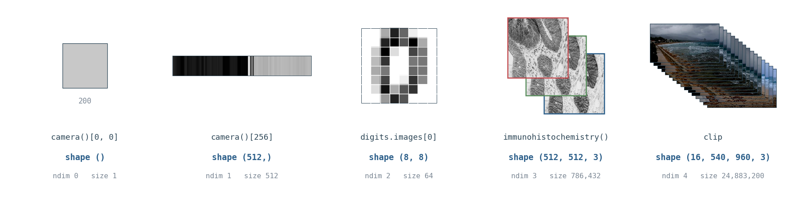
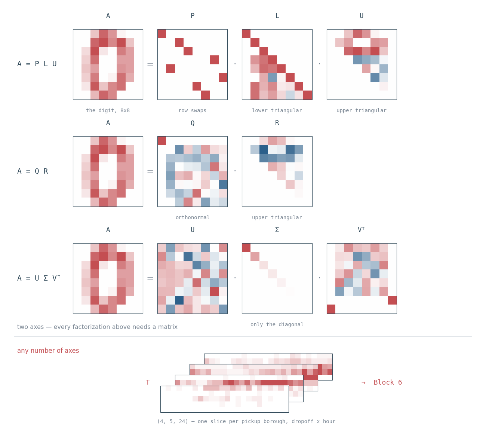
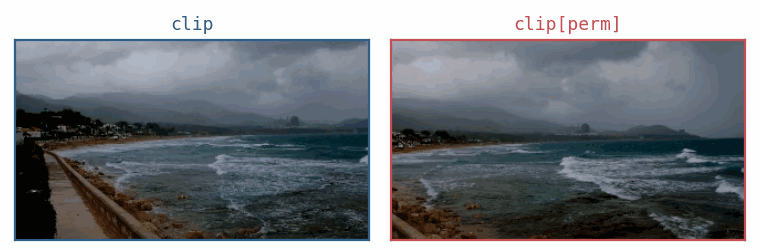
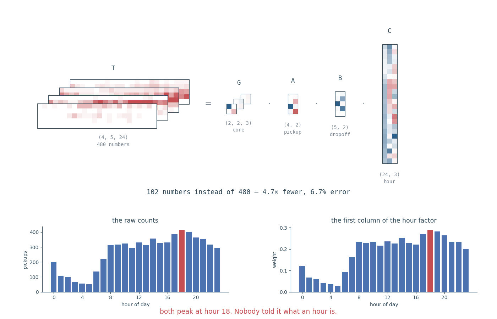

🆕 Facilitator note on this edit. Three 6-question Kahoot quizzes have been inserted as knowledge checks after Block 2, after Block 4, and after Block 6 (see the schedule and each insertion point below, marked 🆕). Running time increases from 180 to 195 minutes (3h15). If you need to hold the line at 180 minutes, see the cutting order in Appendix G, which now also covers the quizzes.
Before you arrive. You know matrices; the workshop assumes no previous knowledge of tensor theory. Everything below is free, and nothing needs installing on your own machine.
Required:
- Read Chapter 2 — Linear Algebra of Deep Learning (Goodfellow, Bengio & Courville): vectors, matrices, the matrix product, the inverse, eigendecomposition, SVD. That chapter is the whole of the assumed background.
- Work through
linear-algebra-deep-learning— 14 short bilingual Colab notebooks (~2–3 hours total) covering exactly that material, vectors through PCA. This workshop moves fast through material it assumes you have reviewed. - Run notebook 00 in Colab before the session. It downloads the three CSV files below; a silent download failure leaves you stuck at Block 4 and Block 6, an hour in. If it fails, say so in Discord immediately.
Recommended:
- Watch Essence of linear algebra (3Blue1Brown) — 16 videos, about 3 hours in total. Watch it if Chapter 2 felt like symbol-pushing: it supplies the geometric picture of what a matrix does, which Parts III and IV lean on throughout.
Have ready on the day:
- A Google account, so the notebooks run in Colab in your browser. Nothing to install.
- Discord — the invite comes from the facilitator. Discussion, breakout channels and questions all happen there, in Spanish or English.
- A phone or a second tab for Kahoot — three 6-question knowledge checks, no sign-up, joined with a PIN.
What you will learn: what a tensor is, the vocabulary used to talk about them, how to manipulate them in NumPy, how to solve systems that have no exact solution, what convolution and deconvolution really are, how recursion works with matrices, and how to factorize tensors.
How we work: Notebooks on GitHub, run in Colab, discussion in Discord. Two rhythms: - Exercise blocks — 10 minutes coding, then 5 minutes explanation. - Group block (video pipeline design, Part III) — 10 minutes discussion in your breakout channel, then share-back.
A note on language. This workshop is taught in English, but many terms are nearly identical in Spanish: tensor/tensor, matrix/matriz, axis/eje, dimension/dimensión, decomposition/descomposición, factorization/factorización, contraction/contracción, convolution/convolución, recursion/recursión. Every new term is defined when it first appears. Ask questions in Spanish or English in the Discord threads — whichever lets you ask faster.
The Data We Use
All data in this workshop is real. Nothing is invented with random numbers, because real data contains problems that random data never shows — missing values, features on incompatible scales, pixels that never change. Finding those problems is part of the work.
Included inside the libraries (no download, works offline):
| Dataset | What it is | Shape |
|---|---|---|
load_breast_cancer() |
569 real patients, 30 measurements from tumour cell images | (569, 30) |
load_digits() |
1797 real handwritten digits | (1797, 8, 8) |
data.camera(), data.astronaut() |
Real photographs | (512, 512), (512, 512, 3) |
data.immunohistochemistry(), data.cell() |
Real histology and microscopy images | (512, 512, 3), (660, 550) |
Downloaded once at the start (needs internet, takes a few seconds):
| Dataset | What it is | Used for |
|---|---|---|
| California Housing | 20,640 real housing districts from the 1990 US census | Pseudoinverse, least squares |
| NYC Taxi Trips | 6,433 real taxi journeys in New York | Tensor factorization |
| Airline Passengers | 144 months of real airline traffic, 1949–1960 | Recursion, forecasting |
Run this first cell now. If it fails, say so in Discord immediately.
import numpy as np
import pandas as pd
from sklearn.datasets import load_digits, load_breast_cancer
from skimage import data
from scipy import signal
from scipy.linalg import lu, toeplitz
HOUSING = "https://raw.githubusercontent.com/ageron/handson-ml2/master/datasets/housing/housing.csv"
TAXIS = "https://raw.githubusercontent.com/mwaskom/seaborn-data/master/taxis.csv"
FLIGHTS = "https://raw.githubusercontent.com/mwaskom/seaborn-data/master/flights.csv"
housing = pd.read_csv(HOUSING)
taxis = pd.read_csv(TAXIS)
flights = pd.read_csv(FLIGHTS)
print(housing.shape, taxis.shape, flights.shape) # (20640, 10) (6433, 14) (144, 3)Schedule (195 minutes, incl. 3 Kahoot checks)
| Part | Segment | Format | Time |
|---|---|---|---|
| — | Setup and welcome | — | 5 min |
| I | What a tensor is: theory and NumPy | demo | 20 min |
| II | Thinking in N dimensions | demo | 20 min |
| III | Block 1 — Indexing and broadcasting real data | exercise | 15 min |
| III | Block 2 — Reshape and transpose real images | exercise | 15 min |
| 🆕 — | Kahoot Quiz 1 — Tensor Vocabulary & Shapes | quiz | 5 min |
| — | Break | — | 5 min |
| III | Group exercise — Video pipeline design | group | 15 min |
| IV | Block 3 — Contraction with einsum |
exercise | 15 min |
| — | Break | — | 5 min |
| IV | Block 4 — Inverses and the pseudoinverse | exercise | 15 min |
| 🆕 — | Kahoot Quiz 2 — Einsum, Distance & the Pseudoinverse | quiz | 5 min |
| IV | Recursion with matrices and vectors | demo | 10 min |
| IV | Block 5 — Convolution and deconvolution | exercise | 15 min |
| — | Break | — | 5 min |
| IV | Block 6 — Tucker decomposition on real data | exercise | 15 min |
| 🆕 — | Kahoot Quiz 3 — Convolution & Tensor Decompositions | quiz | 5 min |
| — | Wrap-up | — | 5 min |
Why these three spots. Each quiz sits right after the block(s) that supply its content, while the material is still fresh, and before the next context switch (a break or a new Part) — so it reinforces rather than interrupts. Quiz 1 closes out Part III’s shape/vocabulary work; Quiz 2 closes out the einsum/pseudoinverse stretch of Part IV; Quiz 3 closes out the decomposition stretch of Part IV, right before the Wrap-up recap.
PART I — What a Tensor Is (20 min)
1.1 Vocabulary
Keep this table open for the whole workshop.
| Term | Plain meaning | Spanish | Example |
|---|---|---|---|
| Tensor | An array of numbers with any number of axes | tensor | A colour image |
| Axis (pl. axes) | One direction along which data is arranged | eje | Height; width; colour |
| Mode | Another word for axis, used in tensor theory | modo | “mode-0 unfolding” |
| Order | How many axes a tensor has | orden | A matrix has order 2 |
| Shape | The size along each axis, as a tuple | forma | (512, 512, 3) |
| Slice | Fix one index, keep the rest | corte | One colour channel |
| Fiber | Fix every index except one | fibra | The 3 colour values of one pixel |
| Unfolding | Rearranging a tensor into a matrix | desplegado | Needed for decompositions |
| Contraction | Multiply and sum over a shared axis | contracción | The dot product |
| Decomposition | Writing one tensor as a product of simpler ones | descomposición | SVD, PCA, Tucker |
⚠️ Warning about the word “rank”. In Chapter 2, rank means the number of independent columns of a matrix. In tensor theory, rank often means the number of axes. To avoid confusion, this workshop says order for the number of axes, and rank only in Chapter 2’s sense.
1.2 Shape in NumPy
Every NumPy array has .shape, a tuple giving the size along each axis. The length of that tuple is .ndim, the number of axes.
scalar = np.array(3.0) # book: a — order 0
vector = np.array([1., 2., 3.]) # book: x, x_i — order 1
matrix = np.array([[1., 2.], [3., 4.]]) # book: A, A_{i,j} — order 2
tensor = np.random.randn(2, 3, 4) # book: A_{i,j,k} — order 3
for name, arr in [("scalar", scalar), ("vector", vector),
("matrix", matrix), ("tensor", tensor)]:
print(f"{name:8s} shape={str(arr.shape):12s} ndim={arr.ndim} size={arr.size}")
# scalar shape=() ndim=0 size=1
# vector shape=(3,) ndim=1 size=3
# matrix shape=(2, 2) ndim=2 size=4
# tensor shape=(2, 3, 4) ndim=3 size=24A scalar has shape=(), an empty tuple — there are no axes to measure. And size is always the product of the numbers in shape: 2 × 3 × 4 = 24.
Now with real data:
digits = load_digits()
print(digits.images.shape) # (1797, 8, 8) — 1797 handwritten digits, 8x8 pixels
photo = data.immunohistochemistry()
print(photo.shape) # (512, 512, 3) — height, width, colour
The same climb, in arrays you will meet today. shape grows by one number at each rung; the last two rungs both have a 3 in them, and the two threes mean nothing like each other.
Both are order 3, but their axes mean completely different things. digits.images counts images along axis 0; photo counts colours along axis 2. The shape alone never tells you what the axes mean. You must know, and you must keep track.
1.3 The Three Operations That Matter
Slices and fibers — fixing indices takes a tensor apart.
photo[:, :, 0].shape # (512, 512) — a slice: one colour channel, still an image
photo[100, 200, :].shape # (3,) — a fiber: the 3 colour values of one pixelUnfolding — every tensor decomposition begins by turning the tensor into a matrix, one axis at a time. Move axis k to the front, then flatten everything else into one long axis.
def unfold(T, axis):
return np.moveaxis(T, axis, 0).reshape(T.shape[axis], -1)
print(unfold(photo, 0).shape) # (512, 1536) — rows are the height axis
print(unfold(photo, 2).shape) # (3, 262144) — rows are the 3 colour channelsUnfolding loses nothing. It only rearranges. The mode-2 unfolding says “each colour channel is one row of 262,144 numbers” — and now every matrix tool you know, including SVD, can be applied to it.
Contraction — multiply along a shared axis and sum over it. The dot product (eq. 2.8) and the matrix product (eq. 2.5) are both contractions. np.einsum writes them directly:
a = np.array([1., 2., 3.]); b = np.array([4., 5., 6.])
np.einsum('i,i->', a, b) # dot product, sum over i (eq 2.8)
A = np.array([[1., 2.], [3., 4.]]); B = np.array([[5., 6.], [7., 8.]])
np.einsum('ik,kj->ij', A, B) # matrix product, sum over k (eq 2.5)The rule, in one sentence: an index that appears in the inputs but not after the arrow is summed over; an index that appears after the arrow is kept.
1.4 The Map of Factorizations
A factorization writes one object as a product of simpler objects. You met two in Chapter 2. Here is the whole family we will use today:
| Method | Works on | What it gives you | Where today |
|---|---|---|---|
| LU | Square matrix | Gaussian elimination, saved for reuse | Below |
| QR / Gram-Schmidt | Any matrix | Perpendicular, unit-length directions | Below |
| Eigendecomposition | Square matrix | Directions that only get scaled (§2.7) | Recursion demo |
| SVD | Any matrix | The most general matrix factorization (§2.8) | Blocks 4 and 6 |
| PCA | Data matrix | Compression to fewer features (§2.12) | Take-home A |
| Pseudoinverse | Any matrix | “Inverse” when no true inverse exists (§2.9) | Block 4 |
| Cholesky | Symmetric positive-definite matrix | A “square root” of a covariance matrix, for building correlated data | Appendix D |
| Tucker / CP | Tensor, any order | PCA generalized to every axis | Block 6 |
Today uses each of these where it happens to be needed. Appendix E puts the whole family side by side and asks what each one costs, which is the question this table does not answer.
A = np.array([[4., 3., 2.], [2., 1., 1.], [6., 3., 5.]])
P, L, U = lu(A) # LU: A = P L U
print(np.allclose(P @ L @ U, A)) # True
Q, R = np.linalg.qr(A) # QR: orthonormal directions
print(np.allclose(Q.T @ Q, np.eye(3))) # True — book eq 2.37LU is Gaussian elimination stored as two triangular matrices, so Ax = b can be solved cheaply many times for different b. QR (computed by Gram-Schmidt, or more stably by other methods) produces orthonormal directions — mutually perpendicular, each of length 1. It is used for orthogonal weight initialization in neural networks and for stable least-squares.

The same 8×8 digit, factorized three ways. The shapes are the point: L really is lower triangular, U upper, and Σ is empty apart from its diagonal. Below the line is an object none of them can touch.
Everything in that table above the double line works on matrices — two axes. Real data often has more. That is what Block 6 addresses.
PART II — Thinking in N Dimensions (20 min)
A live coding demo in the notebook, on real image and video tensors. Open it in Colab and run the Setup cell first — it downloads and checksums the real video clip used by the exercises. Three exercises:
- Read the axes on real tensors.
digits.imagesis(1797, 8, 8)and a photo is(512, 512, 3)— both order 3, but axis 0 counts whole images in one and rows of pixels in the other.digit_batchandvideo_patchare both(8, 8, 8). Before running anything, say what every axis counts. - Shuffle a batch vs shuffle time. Shuffling axis 0 is harmless for a batch — examples are independent, order carries no information — and destroys a video, where order is the information. The same operation, a completely different meaning. Chapter 2’s notation has no concept of “order matters between elements.” That is genuinely new today.
- Batch clips of different lengths. Real videos have different frame counts, but a batch tensor is rectangular. Take three real clips of length 4, 7 and 5, pad them into one
(3, 7, 135, 240, 3)order-5 batch, and carry a Boolean(3, 7)validity mask sovalid.sum() == 16— the padding stays visible instead of being averaged into the data.
PART III — Working With Tensor Axes
Block 1 — Indexing and Broadcasting Real Data (15 min)
Why this matters. The breast_cancer data holds 30 real measurements of tumour cell nuclei for 569 real patients. Selecting the wrong column does not produce an error — it returns a different real measurement, and your analysis continues and gives a confident, wrong answer. In research this produces results nobody can reproduce. In a clinical tool it produces a wrong recommendation about a real person.
In tech, the identical operation runs on a (users, items) matrix to pull one user’s history before making a recommendation.
Exercise (10 min)
bc = load_breast_cancer()
X, y = bc.data, bc.target # (569, 30); y: 0 = malignant, 1 = benign
names = list(bc.feature_names)
# TODO 1: Print X.shape. Say out loud what each axis means.
# TODO 2: Extract the column "mean radius" for all patients -> shape (569,).
# Find its position with names.index(...). Do not hard-code a number.
# TODO 3: Find the 5 patients with the LARGEST mean radius, then extract their
# full 30-measurement profiles as one (5, 30) array, in ONE operation.
# TODO 4: Using boolean indexing, compare mean radius for malignant (y == 0)
# against benign (y == 1) patients. Is there a real difference?
# --- broadcasting, on real images ---
images = load_digits().images # (1797, 8, 8)
D = images.reshape(len(images), -1) # (1797, 64)
# TODO 5: Compute the mean and std of each of the 64 pixels across all images.
# TODO 6: Standardize with broadcasting: (D - mean) / std.
# RUN IT AND LOOK AT THE RESULT before continuing.
# TODO 7: You will find NaN. How many pixels have std == 0, and why would a real
# handwritten digit image contain such pixels? Fix it, then verify no NaN.Explanation (5 min)
i = names.index("mean radius")
radius = X[:, i] # book notation A_{:,j}
top5 = np.argsort(radius)[-5:]
profiles = X[top5, :] # (5, 30)
print(radius[y == 0].mean(), radius[y == 1].mean()) # 17.5 vs 12.1
mean, std = D.mean(axis=0), D.std(axis=0)
print((std == 0).sum()) # 3
Z = (D - mean) / np.where(std == 0, 1.0, std)Two real results. Malignant tumours really do have a larger mean radius — 17.5 against 12.1. And three pixels are always dark in all 1797 digit images: they sit in corners where nobody writes. Their standard deviation is exactly zero, so dividing produces NaN. Random data would never have shown you this.
Block 2 — Reshape and Transpose Real Images (15 min)
Why this matters. Microscopes and cameras order their axes according to the hardware, not according to what a model expects. Getting this wrong does not crash — the model runs on scrambled data and returns confident, meaningless output. In a drug screen, that is a wrong decision about whether a compound works. The famous version in tech: a model trained in TensorFlow (NHWC) deployed into PyTorch (NCHW) with no transpose.
Exercise (10 min)
photo = data.immunohistochemistry() # (512, 512, 3) real histology
cells = data.cell() # (660, 550) real microscopy, grayscale
# TODO 1: Print both shapes. Which one has no colour axis?
# TODO 2: Convert `photo` from (H, W, C) to (C, H, W) with np.transpose.
# TODO 3: Stack `photo` three times into a batch of shape (3, 512, 512, 3).
# Which axis is the batch axis?
# TODO 4: Convert that batch from NHWC to NCHW -> (3, 3, 512, 512).
# Two axes now both have size 3. How do you know which is which?
# TODO 5: photo.reshape(3, 512, 512) runs WITHOUT error but is wrong.
# Run it, compare against TODO 2, and explain the difference.Explanation (5 min)
chw = np.transpose(photo, (2, 0, 1)) # (3, 512, 512) — correct
batch = np.stack([photo, photo, photo]) # (3, 512, 512, 3)
nchw = np.transpose(batch, (0, 3, 1, 2)) # (3, 3, 512, 512)
wrong = photo.reshape(3, 512, 512) # runs, but scrambles the imageReshape only reinterprets numbers in memory order. Transpose moves them according to axis meaning. Both give shape (3, 512, 512); only one is the image. And TODO 4 makes the deeper point: once two axes share a size, the shape cannot tell you which is which. Only your own tracking can.
🆕 Kahoot Quiz 1 — Tensor Vocabulary & Shapes (5 min)
Run this before the break, right after Block 2. Everyone has just used order, axis, shape, slice, fiber, variance, reshape, and transpose — this is the moment those words are freshest. Launch kahoot_quiz_1_vocabulary_shapes.xlsx (6 questions, ~5 min including the podium). No prep needed beyond having it imported into a kahoot ahead of time.
Break (5 min)
Group Exercise — Video Pipeline Design (15 min)
Back to your breakout channel. 10 minutes design, 5 minutes share-back. There is no single correct answer.
Design the tensor shape at each stage — raw file → decoded frames → preprocessed batch → model input → model output — for both systems: - Tech: a short-video app computing one embedding per video from sampled frames, to choose what to play next. - Biotech: a surgical-video model that labels the current phase of an operation from an operating-room camera.

Both panes hold the same eight frames, the same shape and the same sum. Only the order of axis 0 differs, and no arithmetic in this workshop can tell you which one is the video.
- Sketch the shape at each of the five stages, for both. Where are they the same, and where must they differ?
- Clips have different lengths — 30 seconds against 4 hours. Take the padding-and-mask strategy from Part II and give the exact shape of the preprocessed batch. What does an invented or wasted value in that tensor represent?
- The surgical system adds three camera angles recording at once. Where does that axis go, and why does its position change how easy the rest of the pipeline is to write?
- The recommender samples 8 frames out of 900. Which operation from Block 1 does that, and what is lost?
- Both systems must decide which frames matter most. What kind of mechanism could learn that weighting?
PART IV — Computing With Tensors
Block 3 — Contraction With einsum (15 min)
Why this matters. Recommendation and search systems rank items by the dot product between a user vector and every item vector — one user against millions of items, many times per second. That contraction is the ranking signal. Sum over the wrong axis and every user gets wrong results.
Exercise (10 min)
photo = data.immunohistochemistry().astype(float) # (512, 512, 3)
batch = np.stack([photo, data.astronaut().astype(float)]) # (2, 512, 512, 3)
w = np.array([0.2125, 0.7154, 0.0721]) # RGB -> grayscale weights
# TODO 1: With einsum, convert `photo` to grayscale by contracting the colour
# axis against w. Result shape (512, 512).
# TODO 2: Do the same for the whole batch in ONE einsum call -> (2, 512, 512).
# TODO 3: Write these Chapter 2 operations as einsum and check each against NumPy:
# (a) trace (eq 2.48)
# (b) transpose (eq 2.3)
# (c) matrix product (eq 2.5)
# TODO 4: Flatten the digits to (1797, 64) and compute the (1797, 1797) similarity
# matrix between every pair of digit images with one einsum.Explanation (5 min)
gray = np.einsum('hwc,c->hw', photo, w) # (512, 512)
gray_batch = np.einsum('nhwc,c->nhw', batch, w) # (2, 512, 512)
np.einsum('ii->', A) # trace == np.trace(A)
np.einsum('ij->ji', A) # transpose == A.T
np.einsum('ik,kj->ij', A, B) # matrix product == A @ Bc appears in the inputs but not after the arrow, so it is summed over — that is the contraction. n, h, w appear after the arrow, so they are kept. Adding a batch axis costs exactly one letter. This is why einsum is worth learning: the same expression works for one image or for a million, and it reads like the mathematics in Chapter 2.
Block 4 — Inverses and the Pseudoinverse (15 min)
The theory, in three steps
Step 1 — square matrices. Chapter 2 §2.3 defines A⁻¹ for a square matrix, with A⁻¹A = I. But this only exists when the columns are linearly independent. A matrix with dependent columns is singular and has no inverse:
S = np.array([[2., 1.], [1., 3.]])
np.linalg.inv(S) @ S # ≈ identity, fine
Singular = np.array([[1., 2.], [2., 4.]]) # column 2 = 2 × column 1
np.linalg.inv(Singular) # raises LinAlgErrorStep 2 — non-square matrices. A⁻¹ is not even defined. But we still need to solve Ax = b, and in machine learning A is almost never square: it has one row per example and one column per feature, and there are always far more examples than features.
The Moore-Penrose pseudoinverse A⁺ (Chapter 2 §2.9) is the answer. It is defined for every matrix — square or not, singular or not — and it is computed from the SVD (eq. 2.47):
A = np.random.randn(5, 3)
A_plus = np.linalg.pinv(A)
print(A.shape, A_plus.shape) # (5, 3) (3, 5) — note the shape flips
U, S_, Vt = np.linalg.svd(A, full_matrices=False)
print(np.allclose(A_plus, Vt.T @ np.diag(1/S_) @ U.T)) # True — this is eq 2.47It satisfies four conditions that define it uniquely — all verified to be True:
np.allclose(A @ A_plus @ A, A) # 1
np.allclose(A_plus @ A @ A_plus, A_plus) # 2
np.allclose((A @ A_plus).T, A @ A_plus) # 3
np.allclose((A_plus @ A).T, A_plus @ A) # 4What A⁺ gives you depends on the shape, exactly as Chapter 2 §2.9 says: - More rows than columns (too many equations, usually no exact solution) → x = A⁺b gives the x that makes Ax as close as possible to b. This is least squares. - More columns than rows (too few equations, infinitely many solutions) → x = A⁺b gives the valid solution with the smallest norm.
Step 3 — what about tensors? This is a fair question with an honest answer. There is no single tensor inverse that everyone uses. Several definitions exist (based on the Einstein product, or the t-product for order-3 tensors), and they are active research. In practice, in machine learning, you unfold the tensor into a matrix, use the matrix pseudoinverse, and fold the result back. That works because unfolding loses nothing:
T = np.random.randn(4, 3, 5)
M = unfold(T, 0) # (4, 15)
M_plus = np.linalg.pinv(M) # (15, 4)
np.allclose(M @ M_plus @ M, M) # TrueThis is a general lesson worth remembering: when a tensor problem is hard, unfold it to a matrix, solve it there, and fold back.
Exercise (10 min) — real California housing data.
# Predict house value from district features. 20,640 real districts.
print(housing.shape) # (20640, 10)
print(housing['total_bedrooms'].isnull().sum()) # 207 missing values!
# TODO 1: Drop rows with missing values. How many rows remain?
# TODO 2: Build X from these columns, and add a column of ones for the bias:
# ['housing_median_age','total_rooms','total_bedrooms',
# 'population','households','median_income']
# Target y = 'median_house_value'. Print X.shape. Is X square?
# TODO 3: Try np.linalg.inv(X). What happens, and why?
# TODO 4: Solve for the weights with the pseudoinverse: w = pinv(X) @ y.
# TODO 5: Check your answer against np.linalg.lstsq. Do they agree?
# TODO 6: Compute the RMSE of the predictions. Which feature has the largest
# coefficient, and does that make sense for house prices?Explanation (5 min)
d = housing.dropna() # 20433 rows remain
feats = ['housing_median_age','total_rooms','total_bedrooms',
'population','households','median_income']
X = np.column_stack([np.ones(len(d)), d[feats].to_numpy(float)]) # (20433, 7)
y = d['median_house_value'].to_numpy(float)
w = np.linalg.pinv(X) @ y
w_lstsq, *_ = np.linalg.lstsq(X, y, rcond=None)
np.allclose(w, w_lstsq) # True
rmse = np.sqrt(((X @ w - y) ** 2).mean()) # ≈ 75,980X is 20433 × 7 — very tall, so np.linalg.inv cannot even be called. There is no exact solution: no straight line passes through 20,433 points. The pseudoinverse gives the best possible answer instead, and lstsq agrees exactly because it solves the same problem. The largest coefficient belongs to median_income (about 47,700 per unit), which is the sensible result — income predicts house prices.
🆕 Kahoot Quiz 2 — Einsum, Distance & the Pseudoinverse (5 min)
Run this right after Block 4, before the recursion demo. It covers contraction (Block 3’s einsum), the pseudoinverse and singular matrices (Block 4), and distance/similarity — the digit-similarity matrix from Block 3 TODO 4 is the natural bridge between the two. Launch kahoot_quiz_2_distance_pseudoinverse.xlsx (6 questions, ~5 min).
Recursion With Matrices and Vectors (10 min — demo)
Recursion means defining something in terms of itself. With matrices this becomes: apply the same matrix again and again. Three examples, increasing in usefulness.
1. Fibonacci as repeated matrix multiplication. The rule f(n) = f(n-1) + f(n-2) is one matrix applied repeatedly:
F = np.array([[1, 1], [1, 0]])
v = np.array([1, 0])
for _ in range(10):
v = F @ v
print(v[1]) # 55
print(np.linalg.matrix_power(F, 10)[0, 1]) # 55 — same answer, one step2. Power iteration — recursion that finds an eigenvector. Multiply any starting vector by A repeatedly, rescaling each time. It converges to the eigenvector with the largest eigenvalue (Chapter 2 §2.7):
A = np.array([[4., 1.], [2., 3.]])
x = np.random.randn(2); x /= np.linalg.norm(x)
for _ in range(50):
x = A @ x
x /= np.linalg.norm(x)
print(x @ A @ x) # 5.000000
print(np.linalg.eig(A)[0].max()) # 5.000000 — identicalThis is how PageRank ranks web pages, and it is why eigenvectors matter far beyond Chapter 2: repeated application of a matrix converges to its dominant eigenvector.
3. Recursion on real data — forecasting airline traffic. This combines recursion with the pseudoinverse from Block 4. We fit a model that predicts each month from the previous 12, then apply it to its own output to forecast forward:
y = flights['passengers'].to_numpy(float) # 144 real months, 1949–1960
p = 12
rows = np.array([y[i:i+p] for i in range(len(y) - p)])
X = np.column_stack([np.ones(len(rows)), rows])
w = np.linalg.pinv(X) @ y[p:] # least squares, exactly as in Block 4
history = list(y[-p:])
for _ in range(12): # recursion: feed predictions back in
nxt = w[0] + np.dot(w[1:], history[-p:])
history.append(nxt)
print(np.round(history[-12:], 1))
# [465.2 429.1 455.1 491.0 527.8 589.4 679.7 661.3 575.3 509.5 438.6 470.7]The forecast reproduces the seasonal shape of real air travel — low in winter, peaking in summer — because the model learned it from 132 real training windows. This is exactly the structure of a recurrent neural network: a hidden state, updated by the same weights at every step.
W, U = np.random.randn(4, 4) * 0.5, np.random.randn(4, 3) * 0.5
h = np.zeros(4)
for t in range(6):
h = np.tanh(W @ h + U @ xs[t]) # same W and U every step — that is the recursionBlock 5 — Convolution and Deconvolution (15 min)
The theory
Convolution slides a small array (the kernel, or filter) across a larger one, multiplying and summing at each position. It is the operation at the heart of every convolutional neural network, and it is also how every blur, sharpen, and edge-detection filter works.
x = np.array([1., 2., 3., 4., 5.])
k = np.array([1., 0., -1.])
np.convolve(x, k, 'full') # [ 1. 2. 2. 2. 2. -4. -5.] length 5+3-1 = 7
np.convolve(x, k, 'valid') # [ 2. 2. 2.] length 5-3+1 = 3
np.convolve(x, k, 'same') # [ 2. 2. 2. 2. -4.] length 5Three modes, three output sizes. valid uses only positions where the kernel fits completely — this is why convolution shrinks an image by kernel_size - 1.
⚠️ A detail that confuses everyone. True convolution flips the kernel; correlation does not. What deep learning libraries call “convolution” is actually correlation. It makes no practical difference, because the network learns the kernel — but you should know the names are inconsistent.
np.correlate(x, k, 'valid') # [-2. -2. -2.]
np.convolve(x, k[::-1], 'valid') # [-2. -2. -2.] — the same, with k flippedConvolution is a matrix multiplication. This is the connection back to Chapter 2. Any convolution can be written as multiplication by a Toeplitz matrix — a matrix where the kernel is shifted along each row:
col = np.zeros(7); col[:3] = k
row = np.zeros(5); row[0] = k[0]
C = toeplitz(col, row) # (7, 5)
np.allclose(C @ x, np.convolve(x, k, 'full')) # TrueSo convolution is not a new kind of operation. It is a structured matrix multiplication — one where the same few numbers are reused across the whole matrix. That reuse is exactly why CNNs need so many fewer parameters than fully connected networks.
Deconvolution means two different things, and you must keep them separate:
- Transposed convolution — the upsampling layer in a decoder or GAN. It makes things bigger. It is not a true inverse; the name is historical and misleading.
- True deconvolution — recovering the original signal from a blurred one. This is a genuine inverse problem, and it is where Block 4 comes back.
Exercise (10 min)
img = data.camera().astype(float) / 255. # real photograph, 512x512
sobel = np.array([[-1,0,1],[-2,0,2],[-1,0,1]], float)
# TODO 1: Convolve `img` with `sobel` in 'valid' mode. What shape comes out,
# and by how much did it shrink?
# TODO 2: Blur the image with a 9x9 averaging kernel (all entries equal,
# summing to 1), mode='same'. Display it next to the original.
# TODO 3 (transposed convolution): upsample this 2x2 array to 3x3 by adding
# small * kernel into an output array at each position:
# small = np.array([[1., 2.], [3., 4.]]); ker = np.ones((2, 2))
# What shape do you get? Why is this called "deconvolution" in CNNs
# even though it does not undo anything?
# TODO 4 (true deconvolution): add small noise to the blurred image, then try to
# recover the original with skimage.restoration.richardson_lucy(...,
# num_iter=50). Measure error BEFORE and AFTER, ignoring a 25-pixel
# border. Did it improve?Explanation (5 min)
edges = signal.convolve2d(img, sobel, mode='valid') # (510, 510) — shrank by 2
psf = np.ones((9, 9)); psf /= psf.sum()
blurred = signal.convolve2d(img, psf, mode='same', boundary='symm')
noisy = blurred + 0.002 * np.random.default_rng(0).standard_normal(blurred.shape)
from skimage.restoration import richardson_lucy
recovered = richardson_lucy(np.clip(noisy, 0, 1), psf, num_iter=50)
c = 25 # ignore the border: deconvolution always creates edge artifacts
err = lambda a: np.linalg.norm((a-img)[c:-c,c:-c]) / np.linalg.norm(img[c:-c,c:-c])
print(err(noisy), err(recovered)) # 0.1157 -> 0.0815Deconvolution reduced the error by about 30%. Two lessons worth keeping:
First, you must ignore the border. Deconvolution creates strong artifacts at the edges, where the algorithm has no information about what lies outside the image. If you measure error over the whole image, the artifacts dominate and it looks like the method failed. It did not.
Second, why not just invert the blur directly? Because it fails badly. Blurring destroys high-frequency detail, so inverting it divides by numbers very close to zero and amplifies noise enormously:
K = np.fft.fft2(psf, s=img.shape)
naive = np.real(np.fft.ifft2(np.fft.fft2(noisy) / np.where(abs(K) < 1e-3, 1e-3, K)))
# relative error ≈ 1.4 — far WORSE than the blurred image we started fromThis is the same lesson as Block 4. A direct inverse either does not exist or is unusable, so you use a method that finds the best stable answer instead. The pseudoinverse does this for linear systems; Richardson-Lucy and Wiener filtering do it for deconvolution. In biotech this is routine: every fluorescence microscope blurs its images by a known amount (the point spread function), and deconvolution is standard practice before cells are counted or measured.
Break (5 min)
Block 6 — Tucker Decomposition on Real Data (15 min)
The theory
PCA compresses a matrix — two axes. Real data often has more. Tucker decomposition generalizes PCA to a tensor of any order: one factor matrix per axis, plus a small core tensor describing how the factors combine.
The way to compute it, called HOSVD, uses only tools you already have: 1. Unfold the tensor along each axis (Part I). 2. Run SVD on each unfolding; keep the top components. These are the factor matrices. 3. Contract the original tensor against all factor matrices to get the core (Block 3).
The related CP decomposition instead writes the tensor as a sum of simple rank-1 pieces. Tucker is usually more accurate at the same size; CP is often easier to interpret.
Our real tensor. From 6,433 real New York taxi trips we build a genuine order-3 tensor: pickup borough × dropoff borough × hour of day.
Exercise (10 min)
taxis['hour'] = pd.to_datetime(taxis['pickup']).dt.hour
sub = taxis.dropna(subset=['pickup_borough', 'dropoff_borough'])
pb = sorted(sub['pickup_borough'].unique())
db = sorted(sub['dropoff_borough'].unique())
T = np.zeros((len(pb), len(db), 24))
for (p, d, h), v in sub.groupby(['pickup_borough','dropoff_borough','hour']).size().items():
T[pb.index(p), db.index(d), h] = v
# TODO 1: Print T.shape and T.sum(). What does the entry T[i, j, k] mean?
# TODO 2: Which hour has the most trips overall? (Sum over the first two axes.)
# TODO 3: Unfold T along each axis and print the three shapes. Confirm the total
# number of entries is the same each time — unfolding loses nothing.
# TODO 4: Run SVD on each unfolding, keep the top (2, 2, 3) components, and build
# the core tensor with ONE einsum call.
# TODO 5: Reconstruct T from the core and factors, again with one einsum.
# Compute the relative error and the compression ratio.
# TODO 6: Look at the first column of the hour factor matrix. At which hour is it
# largest? Does that match what you found in TODO 2?Explanation (5 min)
Us = [np.linalg.svd(unfold(T, ax), full_matrices=False)[0] for ax in range(3)]
r = (2, 2, 3)
Us = [Us[i][:, :r[i]] for i in range(3)]
core = np.einsum('ijk,ia,jb,kc->abc', T, Us[0], Us[1], Us[2]) # (2, 2, 3)
recon = np.einsum('abc,ia,jb,kc->ijk', core, Us[0], Us[1], Us[2])
error = np.linalg.norm(T - recon) / np.linalg.norm(T) # 0.067
ratio = T.size / (core.size + sum(u.size for u in Us)) # 4.71
480 numbers become 102. The two charts are TODO 6: the busiest hour in the raw counts, and the peak of the hour factor the decomposition built without ever being told what an hour is.
The result: 4.7× fewer numbers, 6.7% error. But the important part is TODO 6. The strongest pattern in the hour factor peaks at hour 18 — and that is also the busiest hour in the raw data. The decomposition discovered evening rush hour by itself. Nobody told it about time, traffic, or commuting; it found the dominant pattern along that axis because that is what a decomposition does.
Look at the einsum strings: 'ijk,ia,jb,kc->abc' contracts three axes in one expression. That is why einsum came first.
Where this is used. In tech, Tucker and CP compress the large weight tensors inside neural networks so models run on phones instead of servers. In biotech, applied to data such as (genes × samples × conditions), they find structure ordinary PCA cannot reach, because PCA can only ever see two axes. For real projects use tensorly, which implements both properly — see Further Reading for the Kolda & Bader survey and the theorem (Eckart–Young) underneath both decompositions.
🆕 Kahoot Quiz 3 — Convolution & Tensor Decompositions (5 min)
Run this right after Block 6, before the Wrap-up. It covers convolution/correlation (Block 5) and Tucker/CP decomposition (Block 6) while the taxi-tensor rush-hour result is still on screen. Launch kahoot_quiz_3_convolution_decompositions.xlsx (6 questions, ~5 min). This also doubles as a live rehearsal of the Wrap-up’s own recap, so segue straight from the quiz into it.
Wrap-Up (5 min)
What you did today:
- Part I — learned the vocabulary of tensors (axis, order, shape, slice, fiber, unfolding, contraction, decomposition), and that unfolding turns any tensor into a matrix without losing anything.
- Part II — worked through what axes mean and why batch and time axes are semantically different.
- Part III — indexed, broadcast, reshaped and transposed real tumour data and real medical images, and hit real problems: zero-variance pixels, and reshape silently destroying an image.
- Part IV — wrote contractions with
einsum; solved an unsolvable 20,433-equation system with the pseudoinverse; used recursion to forecast real airline traffic and to find an eigenvector; convolved and deconvolved a real photograph; and compressed a real taxi tensor 4.7× with Tucker, which found rush hour on its own.
One idea connects Blocks 4, 5 and 6: when a problem has no exact answer or no true inverse, you do not give up — you find the best stable approximation. The pseudoinverse does this for linear systems, Richardson-Lucy for blurred images, and Tucker for tensors that are too large to keep in full.
Where to go next - torch.einsum / tf.einsum / jnp.einsum — identical syntax to what you used today. - np.linalg — the rest of Chapter 2: eigendecomposition, lstsq, pinv, qr, cholesky. - scipy.signal and skimage.restoration — convolution and deconvolution beyond today. - The take-home notebooks below, and the two deep dives beyond them: matrix factorizations and tensor factorizations. - Further Reading — books, the seminal Tucker/CP/SVD papers, and tensorly, for going deeper than today’s 195 minutes.
Further Reading
Chapter 2 of Deep Learning (Goodfellow, Bengio & Courville) is the spine for the linear algebra above, but it doesn’t cover Tucker or CP at all. This is where to go next.
Linear algebra, to go deeper
- Strang, G. — Introduction to Linear Algebra — the accessible one. Author’s page.
- Trefethen, L. N. & Bau, D. — Numerical Linear Algebra — the one that takes SVD seriously. Trefethen’s page.
- Golub, G. H. & Van Loan, C. F. — Matrix Computations — the reference, for when something is numerically wrong. Golub biography · Van Loan’s page.
Tensors specifically
- Kolda, T. G. & Bader, B. W. (2009). Tensor Decompositions and Applications, SIAM Review 51(3), 455–500 — the survey. If you read one thing after this workshop, it is this. Kolda’s page · Bader’s publications.
- Tucker, L. R. (1966). Some mathematical notes on three-mode factor analysis, Psychometrika 31, 279–311 — Block 6’s decomposition, from the source.
- Carroll, J. D. & Chang, J.-J. (1970). Analysis of individual differences in multidimensional scaling via an N-way generalization of “Eckart-Young” decomposition, Psychometrika 35, 283–319, and Harshman, R. A. (1970). Foundations of the PARAFAC procedure, UCLA Working Papers in Phonetics 16, 1–84 — CP/PARAFAC, discovered independently and twice: Carroll & Chang arrived at it as a generalization of Eckart–Young, Harshman from psychometrics, and called it PARAFAC. Harshman’s page.
- Eckart, C. & Young, G. (1936). The approximation of one matrix by another of lower rank, Psychometrika 1, 211–218 — the truncated SVD is the optimal low-rank approximation. This is the theorem underneath Tucker and CP both.
Software
tensorlydocs — Tucker and CP implementations, used in Block 6 and Appendix C. Created by Jean Kossaifi.
Appendix A — Take-Home: How Many Principal Components Are Enough?
Real data contains a trap here. Find it.
bc = load_breast_cancer(); X, y = bc.data, bc.target
# TODO 1: Center X, run np.linalg.svd, and compute the fraction of variance each
# component explains (variance is proportional to S**2).
# TODO 2: How many components explain 95% of the variance? The answer will look
# TOO GOOD. Do not trust it yet.
# TODO 3: Print X.var(axis=0). The 30 measurements use different units — some are
# areas in the thousands, some are ratios below 1. What is that doing?
# TODO 4: Redo everything on standardized data: (X - mean) / std. How many now?
# TODO 5: Scatter-plot the first 2 components, coloured by y. Do the two groups separate?Solution
Xc = X - X.mean(axis=0)
S = np.linalg.svd(Xc, full_matrices=False)[1]
n95 = np.argmax(np.cumsum(S**2/(S**2).sum()) >= 0.95) + 1 # 1 (!)
Xs = (X - X.mean(axis=0)) / X.std(axis=0)
S2 = np.linalg.svd(Xs, full_matrices=False)[1]
n95_scaled = np.argmax(np.cumsum(S2**2/(S2**2).sum()) >= 0.95) + 1 # 10worst area has a variance around 323,000 while smoothness values sit below 1, so PCA reports the largest unit, not the largest pattern. After standardizing, the first component explains 44% and 10 components are needed. PCA knows nothing about units. Features on different scales must be standardized first.
Appendix B — Take-Home: Attention Is Two Contractions
Attention is the mechanism that answers question 5 from the video-pipeline discussion: which parts of a sequence matter most? Protein language models use it so every amino acid can look at every other one; recommenders use it to weight a user’s past interactions.
np.random.seed(6)
batch, seq_len, dim = 4, 12, 16
Q, K, V = (np.random.randn(batch, seq_len, dim) for _ in range(3))
def softmax(x, axis=-1):
x = x - x.max(axis=axis, keepdims=True)
e = np.exp(x); return e / e.sum(axis=axis, keepdims=True)
# TODO 1: With einsum, compute scores[b,i,j] = how much position i attends to
# position j. Shape (4, 12, 12). Scale by 1/sqrt(dim).
# TODO 2: Apply softmax on the correct axis so each row of weights sums to 1.
# TODO 3: With einsum, combine V using those weights -> (4, 12, 16).
# TODO 4: Suppose the last 3 positions are padding, not real data. Build a mask,
# set those scores to -np.inf BEFORE the softmax, and verify the padded
# positions receive exactly zero weight.Solution
scores = np.einsum('bid,bjd->bij', Q, K) / np.sqrt(dim)
weights = softmax(scores, axis=-1)
output = np.einsum('bij,bjd->bid', weights, V)
mask = np.zeros((seq_len, seq_len)); mask[:, -3:] = -np.inf
weights_masked = softmax(scores + mask, axis=-1) # padded positions get weight 0scores is Chapter 2’s dot product (eq. 2.8); output is Chapter 2’s linear combination (eq. 2.28). Attention is two contractions built from ideas you have already read. TODO 4 solves the variable-length problem from Part II: the mask is how real models handle sequences and videos of different lengths.
Appendix C — Take-Home: CP Decomposition, Compared to Tucker
# TODO 1: Build one rank-1 tensor with einsum from three random vectors of
# length 4, 5 and 24. What shape is it? How many numbers define it?
# TODO 2: Compare that against 4*5*24. What is the compression of ONE rank-1 piece?
# TODO 3: pip install tensorly, run tensorly.decomposition.parafac on the taxi
# tensor T with rank=3, and compare its error against your Tucker result.
# TODO 4: Which was more accurate at similar size? Why might that be?Solution sketch
a, b, c = np.random.randn(4), np.random.randn(5), np.random.randn(24)
rank1 = np.einsum('i,j,k->ijk', a, b, c) # (4, 5, 24) from only 33 numbersAppendix E — Matrix Factorizations: Which One, and What It Costs
The workshop used factorizations in passing — LU and QR in Part I §1.4, the pseudoinverse in Block 4, convolution as a matrix product in Block 5 — without ever answering the two questions a practitioner actually has: which one do I reach for on this data, and what does it cost me? This appendix answers both, and the deep-dive notebook does it interactively: 12 · Matrix factorizations.
The organizing idea is that all six are constrained optimizations, and the constraint is what gives each factorization its shape. QR minimizes ‖y − Xβ‖ subject to an orthonormal Q. The truncated SVD minimizes ‖A − B‖_F subject to rank(B) ≤ k — and Eckart–Young–Mirsky proves nothing else does better. NMF minimizes the same quantity subject to W, H ≥ 0, which must be worse on error and is chosen anyway, because the components come out as parts you can name. Cholesky and LU optimize nothing at all: they are exact rewrites whose entire value is downstream, where a solve costs O(n²) instead of O(n³).
The cost table. Leading-term flop counts for a dense m × n factorization with m ≥ n, from Trefethen & Bau, Numerical Linear Algebra:
| Method | Flops | The question it answers |
|---|---|---|
Cholesky (n × n SPD) |
n³/3 |
Solve Ax = b many times, A symmetric positive definite |
LU (n × n) |
2n³/3 |
The same, A merely square |
QR (m × n) |
2mn² − 2n³/3 |
Least squares, without forming XᵀX |
Eigendecomposition (n × n sym.) |
≈ 9n³ |
What does repeated application converge to? |
Thin SVD (m × n) |
2mn² + 11n³ |
The best rank-k approximation of anything |
Randomized SVD (rank k) |
≈ 4mnk |
The same, when k ≪ n and A is dense |
Lanczos (rank k, sparse) |
O(k · nnz(A)) |
The same, when A is sparse |
Three consequences are worth stating outright, because each one is a mistake that costs a single line of code:
- Factor once, solve many. Cholesky costs
n³/3once; each later solve is two triangular substitutions atO(n²). Somright-hand sides costO(n³ + mn²), notO(mn³).np.linalg.inv(A) @ Bis both slower and less accurate than factoring, and is never the right call. - The normal equations square the condition number, because
κ(XᵀX) = κ(X)². QR’s error scales withκ(X)·ε; the normal equations’ withκ(X)²·ε. Same data, same objective, error squared. - Do not compute what you will throw away. A full SVD is
O(mn·min(m,n)). If you want 20 components out of 1682, randomized SVD isO(mnk)and Lanczos isO(k·nnz(A))— the gap between those is why large-scale recommenders are feasible at all.
# TODO 1: Fit a degree-10 polynomial to the real airline series two ways.
# X = np.vander(month_scaled, 11, increasing=True); y = passengers
# a) normal equations: np.linalg.solve(X.T @ X, X.T @ y)
# b) QR: Q, R = np.linalg.qr(X); np.linalg.solve(R, Q.T @ y)
# Use np.linalg.lstsq as the reference. Compare the RESIDUALS, then
# compare the COEFFICIENTS. Only one of those two comparisons sees
# the problem.
# TODO 2: Build the 1797x1797 RBF kernel matrix of the digits plus a ridge
# term, and 200 right-hand sides. Time three strategies: factor once
# with cho_factor/cho_solve, np.linalg.inv(G) @ B, and one
# np.linalg.solve per column. Print the ratios, and the relative
# residual of the first two. Which is both faster AND more accurate?
# TODO 3: Time Cholesky, LU, QR, eigh and SVD across n = 128 ... 768. Fit
# log t against log n; the slope is the measured exponent. Compare
# it against the predicted 3, and compare the measured SVD/Cholesky
# ratio against the 39x the table above predicts. Which of the two
# predictions survives contact with a real machine?
# TODO 4: Write needed_rank(A, target_db) returning the smallest k whose
# rank-k truncation reaches a target PSNR — WITHOUT rebuilding the
# truncation for each k. Eckart-Young gives the squared error as
# sum(S[k:] ** 2) directly. Run it on the 512x512 astronaut image
# for 20, 25, 30 and 35 dB and report what each rank costs to store.Solution
X = np.vander(month_scaled, 11, increasing=True) # TODO 1
beta_normal = np.linalg.solve(X.T @ X, X.T @ passengers)
Q, R = np.linalg.qr(X); beta_qr = np.linalg.solve(R, Q.T @ passengers)
beta_ref = np.linalg.lstsq(X, passengers, rcond=None)[0]
# cond(X) = 2.2e+07, cond(X.T @ X) = 4.6e+14 — the square, to one digit
# residuals agree to six decimals; coefficient errors are 2.0e-03 vs 2.0e-14
X_fast = cho_solve(cho_factor(G), B) # TODO 2
# factor once = 1x; explicit inverse ~5x slower; one solve per column ~340x
# and the explicit inverse is also ~7x less accurate on the residual
slope, _ = np.polyfit(np.log(sizes), np.log(times), 1) # TODO 3
# fitted slopes land near 2.2-2.9, not 3.0; SVD/Cholesky ~31x against 39x
S = np.linalg.svd(A, compute_uv=False) # TODO 4
tail = np.concatenate([np.cumsum(S[::-1] ** 2)[::-1], [0.0]])
db = 10 * np.log10(1.0 / (tail / A.size))
k = int(np.argmax(db >= target_db))TODO 1 is the expensive one. The residuals of the two fits agree to six decimal places, so the check most people run reports nothing wrong — while the coefficients differ by eleven orders of magnitude. That gap is exactly κ(X)² against κ(X), and it came from writing X.T @ X.
TODO 3 does not give you 3.0, and that is not a failure of the theory. Fitted exponents come in low because parallelism and cache reuse both improve as n grows: the machine gets faster at the same work, which flattens the curve. The effect shrinks with larger n, so the slope creeps upward. What does survive is the ratio between methods at fixed n — it cancels the machine out, because both methods gain from the same hardware. Predict with ratios, not exponents.
uint8 image: 6.3% of the pixel count, but 12.5% of the bytes at int16 and 25% at float32. Truncated SVD is a superb analysis tool and a mediocre image codec.
Appendix G — Facilitator Notes
(Students may ignore this section.)
Structure. Four parts that build on each other: understand what a tensor is → reason about why axes exist → manipulate axes → compute with and factorize tensors. Blocks 4, 5 and 6 share one theme — no exact inverse exists, so find the best stable approximation — and stating that connection explicitly at the wrap-up is what makes the second half feel like one lesson rather than four.
Do not rush Part I. It is the students’ first contact with tensor theory and every later block uses its vocabulary. If running late, cut Appendix material, not Part I.
Language. Students are ESL (Colombia). Speak slowly, avoid idiom, and define terms on first use. Name the Spanish cognates aloud early — eje, descomposición, contracción, convolución — it removes friction immediately. Invite questions in either language. Warn about the two meanings of “rank” at the start of Part I.
Verified numbers. Every output quoted in this document was executed and checked: malignant vs benign mean radius 17.5/12.1; 3 zero-variance digit pixels; 207 missing values in the housing data; housing RMSE ≈ 75,980; deconvolution error 0.1157 → 0.0815 (25-pixel border excluded); taxi Tucker 4.71× compression at 6.7% error with the hour factor peaking at 18; and, for Appendix E, the degree-10 airline Vandermonde at κ(X) = 2.16e7 and κ(XᵀX) = 4.65e14, with coefficient errors of 1.95e-03 by the normal equations against 2.04e-14 by QR, and rank 16 of the astronaut image at 21.1 dB. If a student gets something different, it is worth investigating rather than dismissing. The one exception is Appendix E’s timings, which are properties of the machine, not of the data — a Colab CPU will not reproduce them, and the appendix quotes ratios rather than milliseconds for exactly that reason.
The downloads. Three CSVs from GitHub raw URLs. They are small and fast, but confirm in the first 5 minutes that everyone’s download succeeded — a student who silently fails will be stuck at Blocks 4 and 6. Have the three CSVs mirrored in the workshop repo as a fallback.
Pre-assign the breakout groups for the video-pipeline block before the session; assigning them live costs 3–5 minutes.
The group block needs firmer facilitation than exercise blocks. If a group is still on the first design question with 5 minutes left, join their channel and tell them to sketch anything, even a wrong shape. The share-back matters more than a correct sketch.
🆕 The three Kahoot quizzes. Each is 6 questions in kahoot_quiz_1_vocabulary_shapes.xlsx, kahoot_quiz_2_distance_pseudoinverse.xlsx, and kahoot_quiz_3_convolution_decompositions.xlsx, sitting after Blocks 2, 4, and 6 respectively. Import each into a kahoot ahead of time (Create → Add question → Import → Import spreadsheet) — don’t do this live. Budget 5 minutes per quiz including the podium; groups tend to want to see the leaderboard, and that’s fine, it’s the payoff. These add 15 minutes total, taking the workshop from 180 to 195 minutes.
Cutting for time. In order: drop Kahoot Quiz 2 (the least novel of the three — pseudoinverse and distance get re-covered narratively in the Wrap-up), then TODO 4 of Block 5 (true deconvolution — the most technically demanding), then the RNN snippet in the recursion demo, then question 5 of the video-pipeline group block, then Kahoot Quiz 1. Never cut Part I §1.3, Block 6, or Kahoot Quiz 3 — the last one is the cheapest way to check whether Tucker/CP actually landed before students leave.
Known rough edges. Block 5 TODO 4 is the hardest thing in the workshop; students who skip the border crop will conclude deconvolution failed, so flag the 25-pixel crop clearly before the exercise starts, not after. Block 4 TODO 3 asks students to trigger an error deliberately — some will think they did something wrong, so say in advance that the error is the expected result.